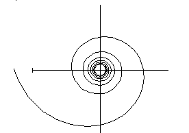
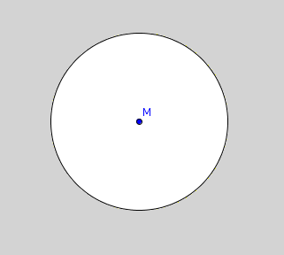
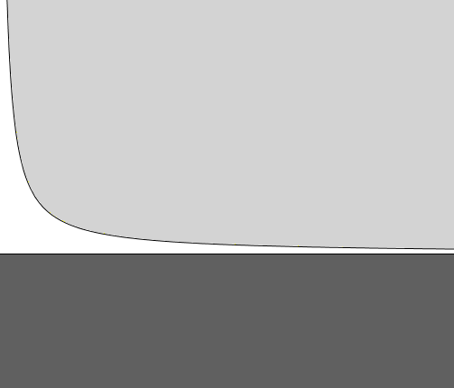

| Choisissez votre langue ! | Choose your language ! |
Nous supposons connue la définition d'un
produit scalaire
.
On peut la trouver sur .
L'exemple classique sur ℝn est
\( \displaystyle \overrightarrow{x}.\overrightarrow{y} = {\sum\limits_{i = 1}^{n}x_{i}y_{i}} \)
si x=(x1, ..., xn) et y=(y1, ... ,yn)We assume the definition of a
scalar product or dot product
is known.
It can be found on .
The classical example on ℝn is
\( \displaystyle \overrightarrow{x}.\overrightarrow{y}={\sum\limits_{i=1}^{n}x_{i}y_{i}} \)
if x=(x1, ..., xn) and y=(y1, ... ,y n)Nous avons également la notion de distance d'un point M par rapport à un sous-ensemble X d'un même espace euclidien.
L'ensemble des nombres d(M,N) où N parcourt X est une ensemble de nombres réels minoré par 0, il admet donc un borne inférieure m ( ).
We also have the notion of distance of a point M with respect to a subset X of the same Euclidean space.
The set of numbers d(M,N) where N runs through X is a set of real numbers lessened by 0, it therefore admits a lower bound m ( ).
Remarquons que cette distance n'est pas forcément 'atteinte', en ce sens qu'il n'existe pas forcément un point N ∈ X tel que d(M,N)=d(M,X).
Nous pouvons par exemple voir cela en prenant pour M l'origine et pour X et pour X une 'spirale hyperbolique d'équation polaire ρ=1/θ θ ∈ [π,+∞[, qui s'enroule autour de l'origine en s'en rapprochant de plus en plus sans jamais l'atteindre.
Note that this distance is not necessarily 'reached', in the sense that there does not necessarily exist a point N ∈ X such that d(M,N)=d(M,X).
We can for example see this by taking for M the origin and for X and for X a 'hyperbolic spiral with polar equation ρ=1/θ θ ∈ [π,+∞[, which winds around the origin, getting closer and closer without ever reaching it.


\( \displaystyle m = {\inf\limits_{M \in X,N \in Y}d\left( {M,N} \right)} \)
\( \displaystyle m = {\inf\limits_{M \in X,N \in Y}d\left( {M,N} \right)} \)
Prendre par exemple pour X dans le plan l'ensemble y > 1/x et pour Y l'ensemble y < 0.
Take for example for X in the plane the set y > 1/x and for Y the set y < 0.

Le coin de Python
Voici le module 'euclidiens.py' qui n'est rien d'autre que le module 'affines.py' modifié.On a ajouté de nouvelles méthodes, le produit scalaire de deux vecteurs, la norme d'un vecteur et la distance de deux points.
Python's Corner
Here is the 'euclidiens.py' module which is nothing but the modified 'affines.py' module.New methods have been added, the dot product of two vectors, the norm of a vector and the distance of two points.
Le coin de Julia
Voici le fichier 'euclidiens.jl' qui n'est rien d'autre que le fichier ' ' modifié et son fichier de test. On ne considère plus l'exemple des corps résiduels ℤ/pℤ. plus besoin donc de la bibliothèqe Nemo.
Julia's corner
Here is the file 'euclidiens.jl' which is nothing other than the file ' ' modified and its test file. We no longer consider the example of residual bodies ℤ/pℤ. no longer need the Nemo library.
|
Création Gilles Dubois
Created by Gilles Dubois
|
Janvier 2022
January 2022
|
Version mobile Jquery
Mobile Jquery version
|
|